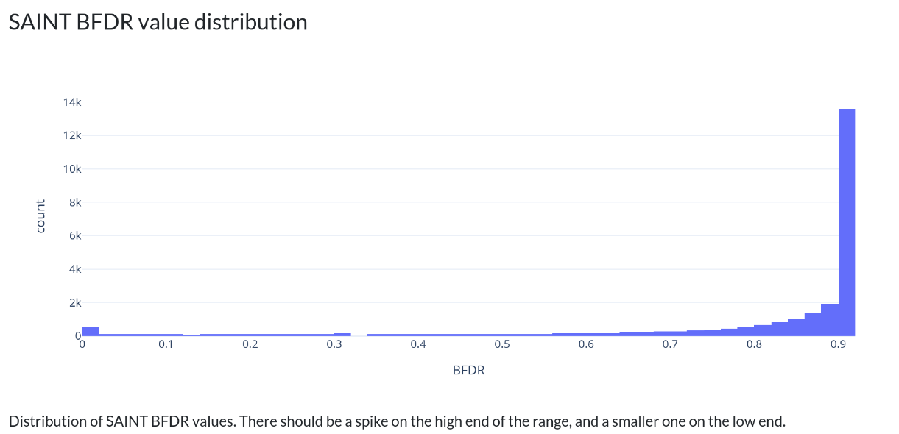
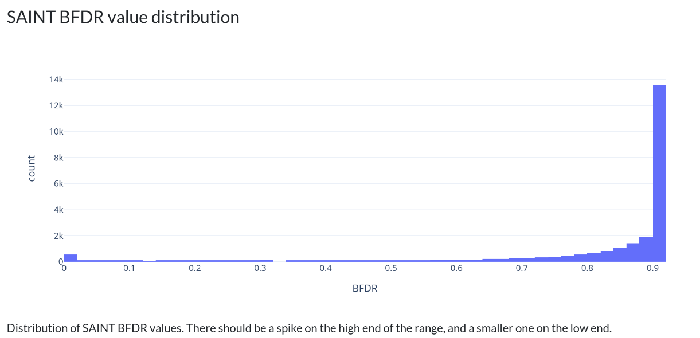
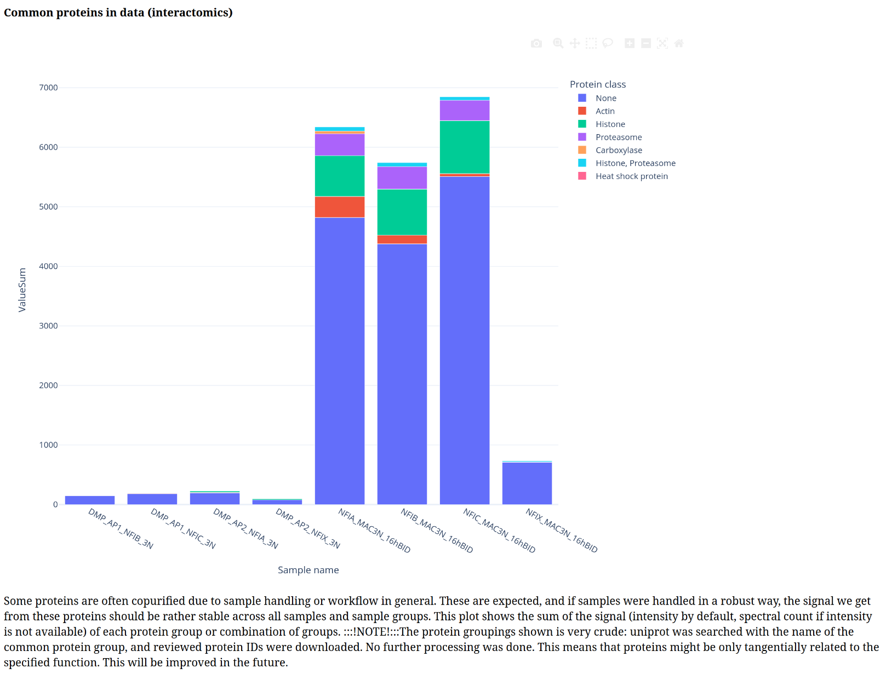
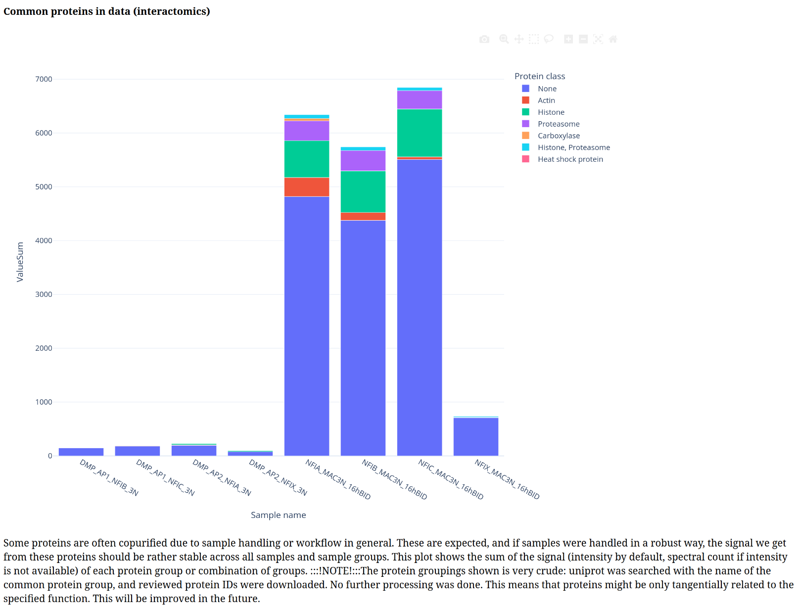
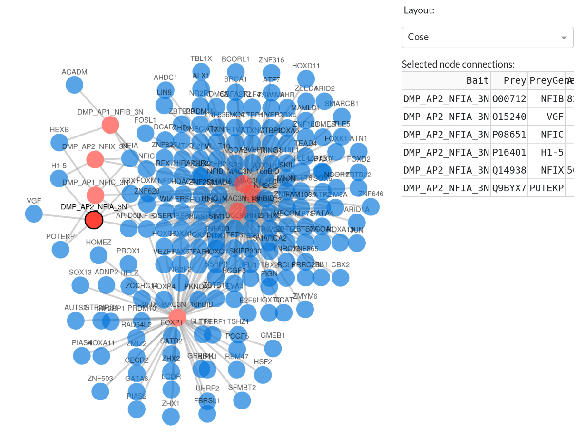
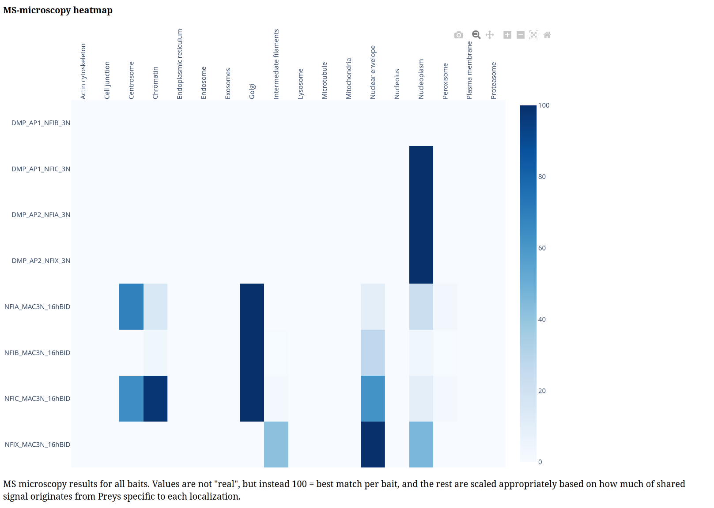
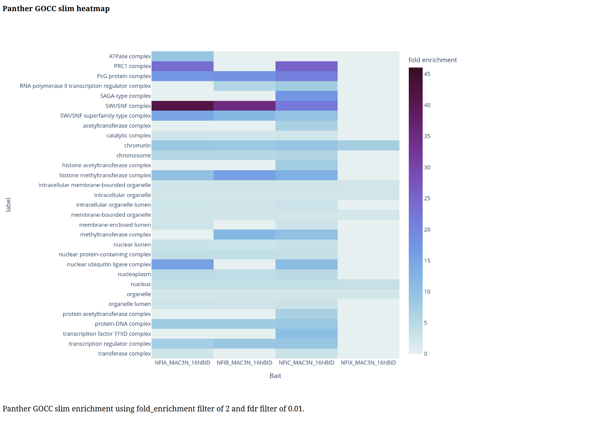
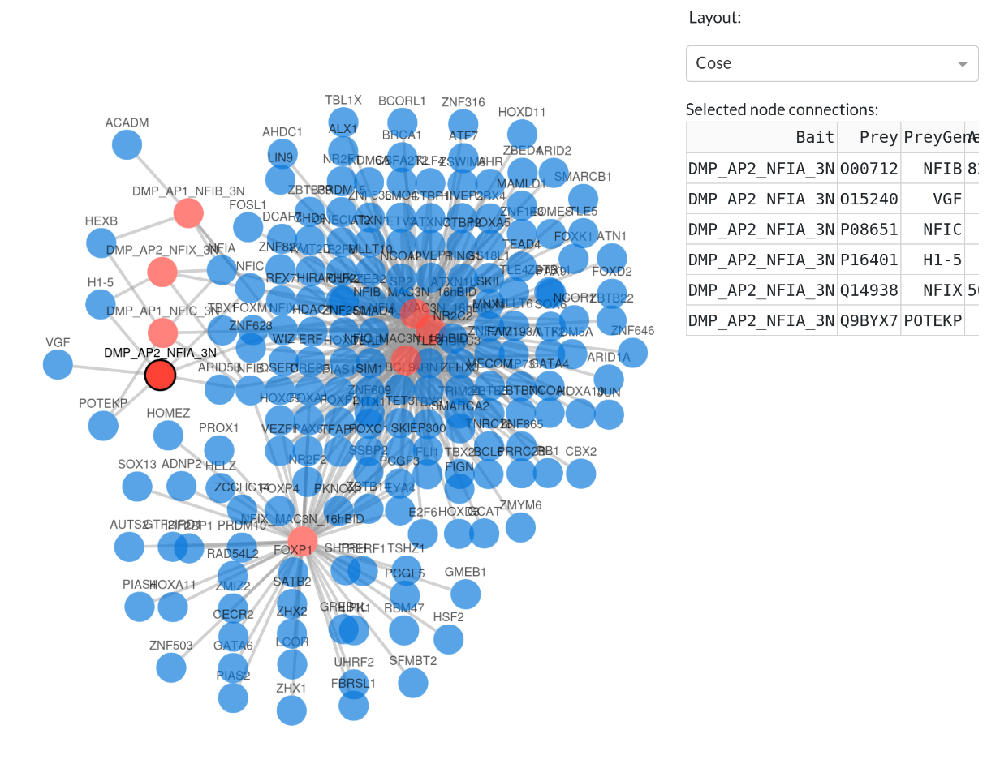
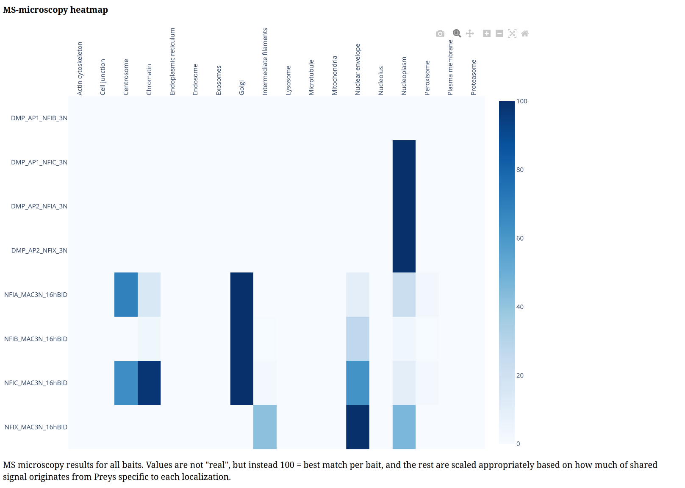
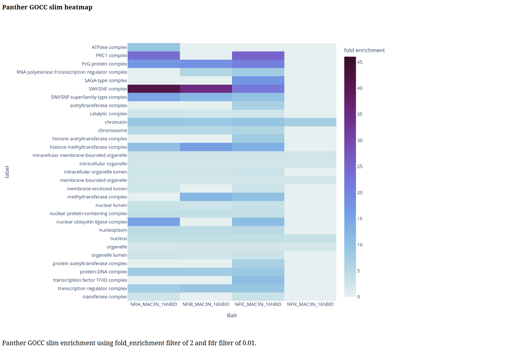

Example Interactomcis usecase for ProteoGyver using a public dataset
This guide documents the end to end QC analysis of a public interactomics dataset.
Software and data prerequisites
For this example, we used a publicly available dataset (MSV000095163, Original paper)
Since the goal is not to demo how to use FragPipe, default workflows will be used, with minimal consideration given to e.g. parameters of different mass spectrometers. As long as the library used is from the same organism, we will identify enough proteins to demo PG. In a real use scenario, parameters in MSFragger in particular should be set according to the MS settings. For this reason, default FragPipe workflow was used with a recent Human fasta proteome downloaded from UniProt. To save time on searches, only a subset of 30 runs were analyzed (see sample table below)
Proteogyver
This example assumes you have proteogyver running in a docker container already. If not, refer to the main readme file for install instructions.
Data upload
For data upload, the combined_protein.tsv from the FragPipe output was used as the data table, and for sample table, a tsv file with the following contents was created:
Sample name |
Sample group |
Bait uniprot |
|---|---|---|
15537_DMP_AP2_GFP_3N_1_S1_B10_1 |
DMP_AP2_GFP_3N |
P42212 |
15538_DMP_AP2_GFP_3N_2_S1_B11_1 |
DMP_AP2_GFP_3N |
P42212 |
15539_DMP_AP2_GFP_3N_3_S1_B12_1 |
DMP_AP2_GFP_3N |
P42212 |
15573_DMP_AP1_NFIB_3N_1_S1_E1_1 |
DMP_AP1_NFIB_3N |
O00712 |
15574_DMP_AP1_NFIB_3N_2_S1_E2_1 |
DMP_AP1_NFIB_3N |
O00712 |
15575_DMP_AP1_NFIB_3N_3_S1_E3_1 |
DMP_AP1_NFIB_3N |
O00712 |
15581_DMP_AP2_NFIA_3N_1_S1_E7_1 |
DMP_AP2_NFIA_3N |
Q12857 |
15582_DMP_AP2_NFIA_3N_2_S1_E8_1 |
DMP_AP2_NFIA_3N |
Q12857 |
15583_DMP_AP2_NFIA_3N_3_S1_E9_1 |
DMP_AP2_NFIA_3N |
Q12857 |
15589_DMP_AP1_NFIC_3N_1_S1_F1_1 |
DMP_AP1_NFIC_3N |
P08651 |
15590_DMP_AP1_NFIC_3N_2_S1_F2_1 |
DMP_AP1_NFIC_3N |
P08651 |
15591_DMP_AP1_NFIC_3N_3_S1_F3_1 |
DMP_AP1_NFIC_3N |
P08651 |
15629_DMP_AP2_NFIX_3N_1_S1_H7_1 |
DMP_AP2_NFIX_3N |
Q14938 |
15630_DMP_AP2_NFIX_3N_2_S1_H8_1 |
DMP_AP2_NFIX_3N |
Q14938 |
15631_DMP_AP2_NFIX_3N_3_S1_H9_1 |
DMP_AP2_NFIX_3N |
Q14938 |
17547_NFIA_MAC3N_16hBID_R1_S1_C1_1 |
NFIA_MAC3N_16hBID |
Q12857 |
17548_NFIA_MAC3N_16hBID_R2_S1_C2_1 |
NFIA_MAC3N_16hBID |
Q12857 |
17549_NFIA_MAC3N_16hBID_R3_S1_C3_1 |
NFIA_MAC3N_16hBID |
Q12857 |
17551_NFIB_MAC3N_16hBID_R1_S1_C5_1 |
NFIB_MAC3N_16hBID |
O00712 |
17552_NFIB_MAC3N_16hBID_R2_S1_C6_1 |
NFIB_MAC3N_16hBID |
O00712 |
17553_NFIB_MAC3N_16hBID_R3_S1_C7_1 |
NFIB_MAC3N_16hBID |
O00712 |
17555_NFIC_MAC3N_16hBID_R1_S1_C9_1 |
NFIC_MAC3N_16hBID |
P08651 |
17556_NFIC_MAC3N_16hBID_R2_S1_C10_1 |
NFIC_MAC3N_16hBID |
P08651 |
17557_NFIC_MAC3N_16hBID_R3_S1_C11_1 |
NFIC_MAC3N_16hBID |
P08651 |
17559_NFIX_MAC3N_16hBID_R1_S1_D1_1 |
NFIX_MAC3N_16hBID |
Q14938 |
17560_NFIX_MAC3N_16hBID_R2_S1_D2_1 |
NFIX_MAC3N_16hBID |
Q14938 |
17561_NFIX_MAC3N_16hBID_R3_S1_D3_1 |
NFIX_MAC3N_16hBID |
Q14938 |
17567_GFP_MAC3N_16hBID_R1_S1_D9_1 |
GFP_MAC3N_16hBID |
P42212 |
17568_GFP_MAC3N_16hBID_R2_S1_D10_1 |
GFP_MAC3N_16hBID |
P42212 |
17569_GFP_MAC3N_16hBID_R3_S1_D11_1 |
GFP_MAC3N_16hBID |
P42212 |
Interactomics was chosen from the workflow dropdown, and then it’s time to press the “Begin analysis” -button. After that, the workflow is initiated, and QC plots should begin to appear with figure legends documenting, what each of them represents. After QC plots have been generated, the interactomics-specific input options panel will appear at the top of the page:
 In this example we’ve chosen to use GFPs from the sample set as controls, as well as all possible control purification sets and crapome sets, and a few PANTHER enrichments.
After clicking “Run SAINT analysis”, PG will run SAINT, and present another input panel further down the page:
In this example we’ve chosen to use GFPs from the sample set as controls, as well as all possible control purification sets and crapome sets, and a few PANTHER enrichments.
After clicking “Run SAINT analysis”, PG will run SAINT, and present another input panel further down the page:
 Here we see the filtered prey counts with the chosen filters. In this particular dataset, we have some AP-MS purifications together with BioID, so the lower counts on that side are expected. Normally APMS and BioID samples are analyzed in different SAINT runs, but for general QC purposes, this will do.
Here we see the filtered prey counts with the chosen filters. In this particular dataset, we have some AP-MS purifications together with BioID, so the lower counts on that side are expected. Normally APMS and BioID samples are analyzed in different SAINT runs, but for general QC purposes, this will do.
When we’ve chosen the filters we want to use, we can click the “Done filtering” button, and PG will start generating interactomics-specific plots. Below is a gallery of all the generated plots.


 


 

 




